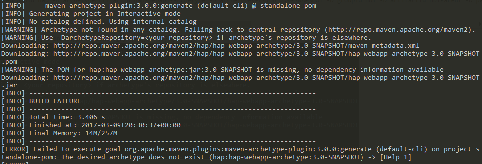

新开项目
本章节将引导您从 零 开始，创建一个可以运行的 Demo 工程。此工程基于 hap 标准版，包含一个 demo 实例。
后端项目
确定项目信息
- groupId 本项目的代号，比如汉得的 BI 产品，代号为 hbi
- artifactId 本项目的顶层目录名称，使用项目代号(第一个字母大写) + Parent，如 HbiParent
- package 包名称，使用项目代号 + core ,如 hbi.core
- archetypeVersion 是指模板项目的版本，可以使用以下版本号
1.0-SNAPSHOT 2.0-SNAPSHOT 3.0-SNAPSHOT 3.1-SNAPSHOT
新建项目 (HAP2.0)
确定上述信息后，可以使用如下命令新建项目：
注意 maven-archetype-plugin 2.4及以下版本可以正常使用下面命令
mvn archetype:generate -D archetypeGroupId=hap -D archetypeArtifactId=hap-webapp-archetype -D archetypeVersion=3.1-SNAPSHOT -D groupId=hbi -D artifactId=HbiParent -D package=hbi.core -D archetypeRepository=http://nexus.saas.hand-china.com/content/repositories/rdcsnapshot
在maven-archetype-plugin 3.0.0 版本中，移除了对-D archetypeRepository参数的支持，会报以下错误

解决方案： 指定使用2.4版本的archetype-plugin插件：
mvn org.apache.maven.plugins:maven-archetype-plugin:2.4:generate -D archetypeGroupId=hap -D archetypeArtifactId=hap-webapp-archetype -D archetypeVersion=3.1-SNAPSHOT -D groupId=hbi -D artifactId=HbiParent -D package=hbi.core -D archetypeRepository=http://nexus.saas.hand-china.com/content/repositories/rdcsnapshot
以下内容所指的
HbiParent均指上面命令中的参数artifactId的值，请按实际情况替换
新的项目目录结构如下：
.
├── README.md (项目README，请在此处写上项目开发的注意信息，方便团队协同)
├── core（功能实现项目）
│ ├── pom.xml （子项目core的pom.xml文件）
│ └── src
│ └── main
│ ├── java
│ │ ├── hbi
│ │ │ └── core（前面的包名称）
│ │ │ │
│ │ │ ├── controllers（Controller包）
│ │ │ │ └── DemoController.java（Controller类）
│ │ │ ├── db（数据表结构，数据初始化入口文件）
│ │ │ │ └── liquibase.groovy
│ │ │ ├── dto（Dto包）
│ │ │ │ └── Demo.java（Dto实现类）
│ │ │ ├── mapper（Mapper包）
│ │ │ │ ├── DemoMapper.java（Mapper接口）
│ │ │ └── service（Service包）
│ │ │ ├── IDemoService.java
│ │ │ └── impl（Service实现）
│ │ │ └── DemoServiceImpl.java
│ │ └── resources（项目配置文件目录）
│ │ ├── mapper
│ │ │ └── DemoMapper.xml（Mapper xml文件）
│ │ ├── spring （spring配置文件目录）
│ │ ├── config.properties
│ │ └── logback.xml（日志配置文件）
│ └── webapp（Webapp目录）
│ ├── lib（UI 资源库目录）
│ └── WEB-INF
│ ├── web.xml（Web.xml配置）
│ └── view（页面文件目录）
│ └── demo（DEMO页面文件目录）
├── core-db（数据库脚本及初始化数据项目）
│ ├── pom.xml
│ └── src
│ └── main
│ └── java
│ └── hbi
│ └── core
│ └── db
│ ├── data（数据文件）
│ │ └── (init-data)
│ └── table（数据库表结构管理）
│ └── 2016-06-01-init-migration.groovy
└── pom.xml
确定本项目使用的数据库
目前已经测试过支持的数据库有Mysql,Oracle,SqlServer
请修改HbiParent/core/src/main/java/hbi/core/db/liquibase.groovy以适配不同的数据库
确定好数据库后，按照 Oracle,MySql,Sqlserver数据库配置 修改项目配置文件。
修改配置文件后，按照创建数据库 中的步骤创建数据库
编译整个项目
在 HbiParent 目录下执行：
mvn clean install -D maven.test.skip=true
初始化数据库表结构及基础数据
在 HbiParent 项目录下执行：
- MySql
mvn process-resources -D skipLiquibaseRun=false -D db.driver=com.mysql.jdbc.Driver -D db.url=jdbc:mysql://127.0.0.1:3306/hap_dev -D db.user=hap_dev -D db.password=hap_dev
- SqlServer
mvn process-resources -D skipLiquibaseRun=false -Ddb.user=hap -Ddb.password=handhapdev -D db.driver=com.microsoft.sqlserver.jdbc.SQLServerDriver -D db.url="jdbc:sqlserver://10.211.55.6:1433; DatabaseName=hap_dev"
- Oracle
mvn process-resources -D skipLiquibaseRun=false -D db.driver=oracle.jdbc.driver.OracleDriver -D db.url=jdbc:oracle:thin:@192.168.115.136:1521:HAP -D db.user=hap_dev -D db.password=hap_dev
- Hana
mvn process-resources -D skipLiquibaseRun=false -D db.driver=com.sap.db.jdbc.Driver -D db.url=jdbc:sap://192.168.11.28:35215/hap -Ddb.user=hap_dev -Ddb.password=hap_dev- 以上命令中，需要按实际情况修改 url，user，password
注意
在1.0中上面生成的项目中已经包含了一个demo功能，请在正式开发前将demo功能的表结构，dto,mapper,service,controller删除。 2.0 ,3.0中没有demo功能，提供了代码生成器方便开发和学习
测试
在 HbiParent 工程目录下执行命令(IntelliJ IDEA 用户可以跳过此步骤)
mvn eclipse:eclipse将所有工程导入 IDE 工具（Eclipse，IntelliJ IDEA）中
- 配置 Server ，配置 JNDI 数据源，参照多数据库配置
- 需要 Tomcat 7+， 不支持 Tomcat 6
- 将 hbi 工程发布到 tomcat，运行